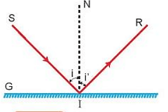
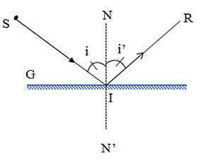

I. Hiện tượng phản xạ ánh sáng
Khi chiếu một chùm sáng vào gương, chùm sáng bị hắt trở lại theo hướng khác. Hiện tượng đó gọi là phản xạ ánh sáng.
Hiện tượng phản xạ ánh sáng cũng xảy ra trên các bề mặt nhẵn bóng khác.
Ví dụ: Phản xạ ánh sáng trên mặt nước phẳng lặng.
Các thành phần trong hiện tượng phản xạ ánh sáng
- G: Gương phẳng (mặt phản xạ).
- SI: Tia tới.
- IR: Tia phản xạ.
- I: Điểm tới.
- IN: Pháp tuyến tại điểm tới.
- Mặt phẳng tới: Mặt phẳng chứa tia tới và pháp tuyến.
- Góc tới: Góc tạo bởi tia tới và pháp tuyến.
- Góc phản xạ: Góc tạo bởi tia phản xạ và pháp tuyến.

II. Định luật phản xạ ánh sáng
- Tia phản xạ nằm trong mặt phẳng tới.
- Góc phản xạ bằng góc tới.

III. Phản xạ và phản xạ khuếch tán
1. Phản xạ
Khi mặt phản xạ nhẵn, các tia sáng tới song song sẽ phản xạ theo cùng một hướng. Hiện tượng này gọi là phản xạ gương.
Khi xảy ra phản xạ gương, ta có thể nhìn thấy ảnh của vật.
Ví dụ: Phản xạ trên mặt nước phẳng lặng hoặc gương soi.
2. Phản xạ khuếch tán
Khi mặt phản xạ không nhẵn, các tia sáng tới song song sẽ phản xạ theo nhiều hướng khác nhau. Hiện tượng này gọi là phản xạ khuếch tán.
Khi xảy ra phản xạ khuếch tán, ta không nhìn thấy ảnh của vật.
Ví dụ: Phản xạ trên mặt nước gợn sóng hoặc tường nhám.
Ghi nhớ
- Ánh sáng gặp gương hoặc bề mặt nhẵn sẽ xảy ra hiện tượng phản xạ.
- Tia phản xạ nằm trong mặt phẳng tới.
- Góc phản xạ luôn bằng góc tới.
- Mặt nhẵn tạo phản xạ gương.
- Mặt gồ ghề tạo phản xạ khuếch tán.